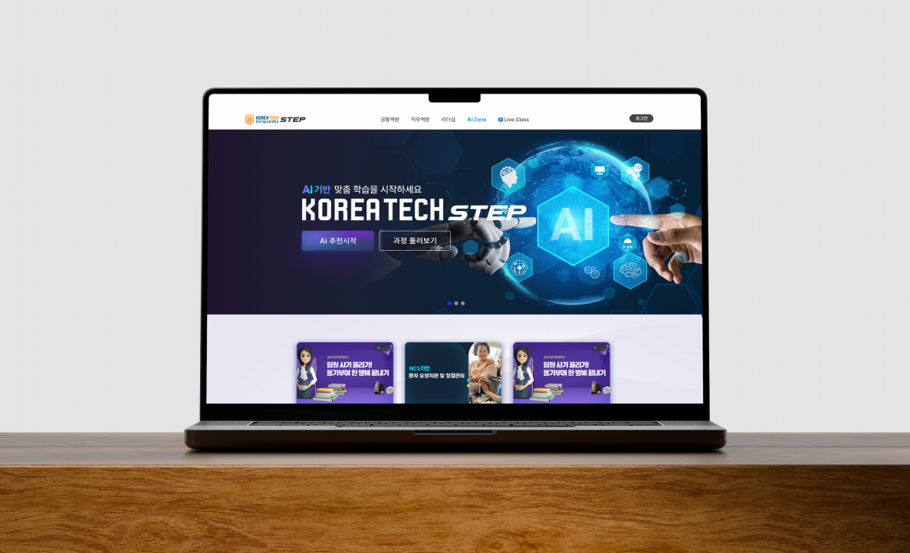
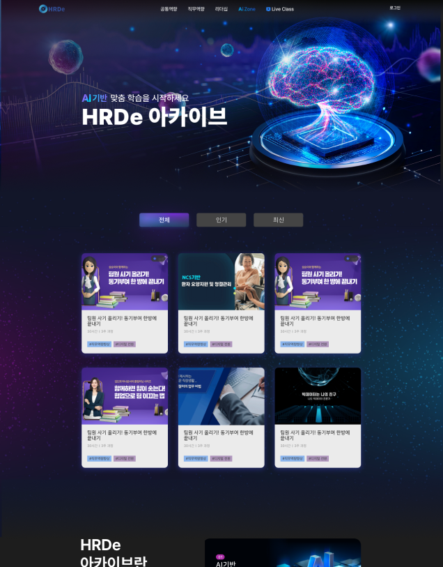
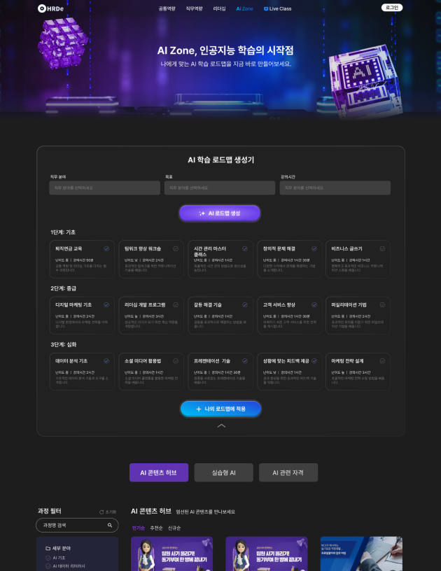

Outcome
쌓여만 가던 콘텐츠가, 대상별 입구를 갖게 됐다.
추천 기반 진입점
개인화된 학습 시작
통합 아카이브 구조
대상별 배너로 재구성
다축 필터 체계
AI 추천 클릭률 32%, 탐색 완료까지 평균 2.4클릭, 필터 재사용률 41%
KOREATECH STEP은 Inex가 운영하는 기업 대상 교육 콘텐츠 플랫폼이다. 법정교육, 공통역량, 리더십역량 등 다루는 카테고리가 계속 늘어나면서, 신입사원 온보딩부터 임원 리더십 콘텐츠까지 성격이 다른 교육이 한 아카이브 안에 뒤섞이고 있었다.
콘텐츠가 늘어나는 속도를 탐색 구조가 따라가지 못하면서, 사용자가 "지금 나에게 필요한 교육"을 찾기까지 거쳐야 하는 단계가 길어지고 있었다.

대상과 목적이 전혀 다른 교육이 하나의 리스트에 함께 노출되면서, 사용자는 스크롤을 내리며 본인에게 맞는 콘텐츠를 직접 걸러내야 했다.
신입사원 대상 온보딩 콘텐츠와 임원 대상 리더십 콘텐츠가 구분 없이 같은 배너 영역에 노출되고 있었다.
카테고리 수가 늘어날수록 홈 진입 후 원하는 교육까지 도달하는 경로가 길어지고 있었다.
홈 히어로에 AI 기반 추천 진입점을 배치해 "AI 추천시작"만으로 개인화된 탐색을 시작할 수 있게 하고, 그 아래 신입사원·MZ세대 리더십·임원 등 대상이 명확한 배너 콘텐츠를 배치해 스스로 카테고리를 찾지 않아도 되는 구조로 재설계했다.


기존에 쌓여 있던 교육 콘텐츠를 대상·목적 기준으로 재분류하고, 어떤 콘텐츠를 홈 상단에 먼저 노출할지 우선순위를 정한 뒤 UI에 반영했다.
콘텐츠를 다 보여주는 것과 "지금 필요한 것"을 먼저 보여주는 것은 다른 문제였다. AI 추천이라는 입구를 만들고 나서야, 나머지 배너들의 우선순위도 함께 정리할 수 있었다.
다시 한다면, AI 추천 결과가 실제로 얼마나 클릭으로 이어지는지 초기부터 트래킹을 붙여서 배너 우선순위를 데이터로 검증했을 것 같다. 지금은 정성적 판단에 기댄 부분이 있었다.